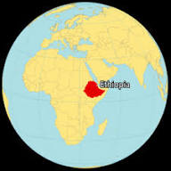
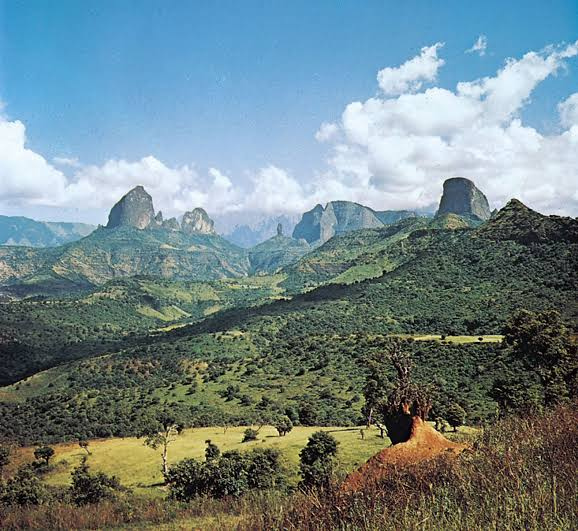

Ethiopia is located in the Horn of Africa and is known for its diverse geography, including highlands, lowlands, and the Great Rift Valley. The country has a variety of climates and ecosystems, from tropical forests to arid deserts.

The Ethiopian Highlands, often referred to as the "Roof of Africa," are a significant geographical feature, with the Simien Mountains and the Bale Mountains being prominent ranges. The Great Rift Valley runs through the country, creating a dramatic landscape of escarpments and valleys. Ethiopia also has several large lakes, including Lake Tana, which is the source of the Blue Nile.

In addition to its highlands and rift valley, Ethiopia is home to the Danakil Depression, one of the hottest and lowest places on Earth. The country's geography also includes lowland river systems, such as the Blue Nile, White Nile, and Awash River, which play a crucial role in the region's ecology and human settlements.